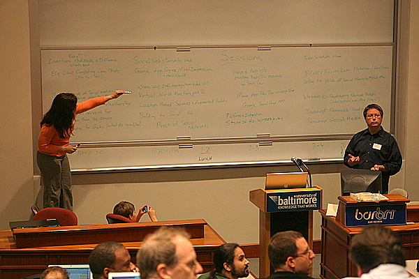
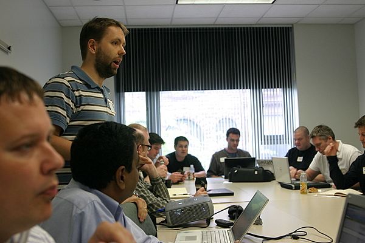
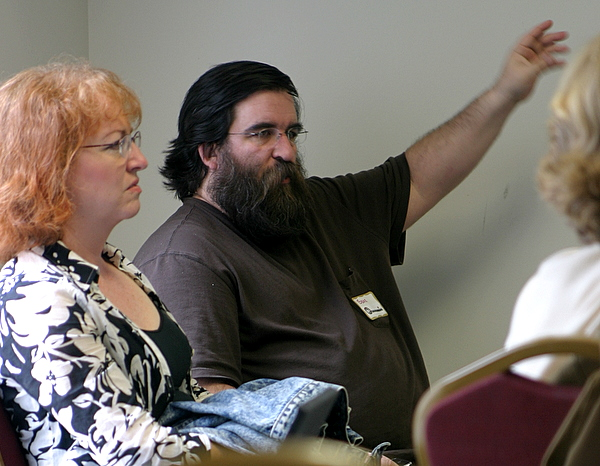

Picking session topics at SocialDevCamp East
The DC area is exploding with meetups and unconferences. First it was BarCamp DC in August, then PodCampDC at the end of April, and just this past weekend was SocialDevCamp East which took place in Baltimore. The latest unconference had an emphasis on the future of the web and many of the sessions were theory-heavy about topics that are the very bleeding edge of the next-generation Internet.

Mike Subelsky talked about Amazon’s EC2 web service.
The first session I went to was about Amazon’s web services specifically the EC2 service. The discussion, which was led by Mike Subelsky, revealed the possibilities for new products and services thanks to Amazon taking a lot of the cost and hassle of running server hardware out of the equation with their on-demand virtual server solution. System administration is foreign to me but I could see the benefit of Amazon’s web services.
Dr. Harry Chen discusses the Semantic web.
The Social Media and Semantic Web panel was a real thinker. This was the first time really diving into the nitty-gritty of the Semantic web, which will make the future Internet smarter and easier to manage with data being in a well structured, meaningful format. Dr. Harry Chen led the discussion (see his slides) with some valuable contributions from the crowd about where this web trend was heading. This gave me ideas about how U.S.News & World Report could add Semantic data to it’s upcoming data projects.

Bear, from Seesmic, adding to the Semantic web discussion.
Lunch was provided at SocialDevCamp East and consisted of a make-your-own sandwich buffet. It was probably one of the best spreads at any unconference I’ve been to. During lunch I chatted with Patti, the founder of a Baltimore area start-up called 600block.com. The site aims to help you and your friends find interesting local things, starting with Baltimore and eventually branching out to other areas. I also met Bear who is an infrastructure developer at Seesmic. He mentioned Seesmic is embracing the Semantic web by building FOAF and SPARQL into their API’s. They hope to make everything they can as open as possible which is really encouraging for the future of web video communication. He also gave me a Seesmic t-shirt. Nice!
Shashi knows the benefit of social media to companies.
After lunch I went to see what Shashi Bellamkonda from Network Solutions had to say about Selling the Value of Social Web to Management. Shashi is a very web social guy who I first met at PodCampDC. He cited how lots of companies are opening up direct communications with customers like Comcast with their ComcastCares twitter account. His main point was blogs/Facebook/Twitter are not another marketing avenue for companies to fill, but rather a way to expose the personality behind the company.
The final session was an intimate discussion about the popular JavaScript libraries that are out there. In attendance was Amy Hoy who is engaged to Thomas Fuchs the creator of script.aculo.us. Clearly she had a bias to Prototype but everyone else seemed to be into jQuery.
I had to duck out after the actual conference part was over so I missed the after party. I met a lot of interesting people who share the same passion for technology as me. Each time I go to one of these unconferences I come out with a bunch of ideas and new perspectives. I can’t wait until the next one which will probably be BarCampDC 2 sometime in the summer. And if you missed this one don’t fret as their are plans for another SocialDevCamp East in the fall.
Other SocialDevCamp East Recaps:


{kind=link}